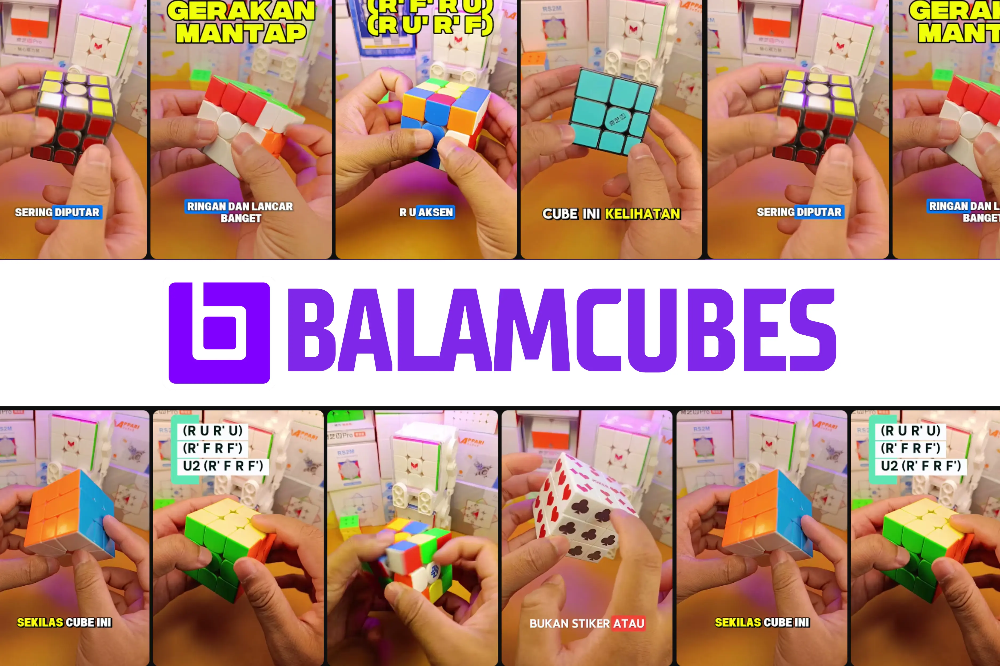
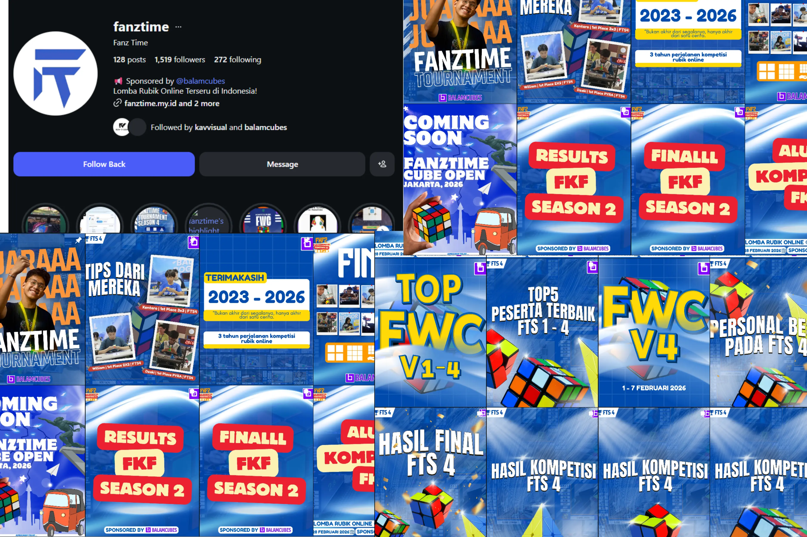
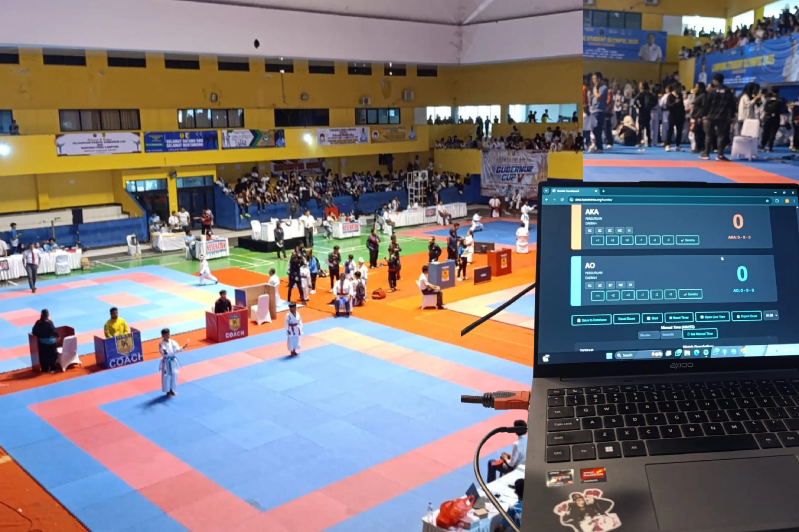
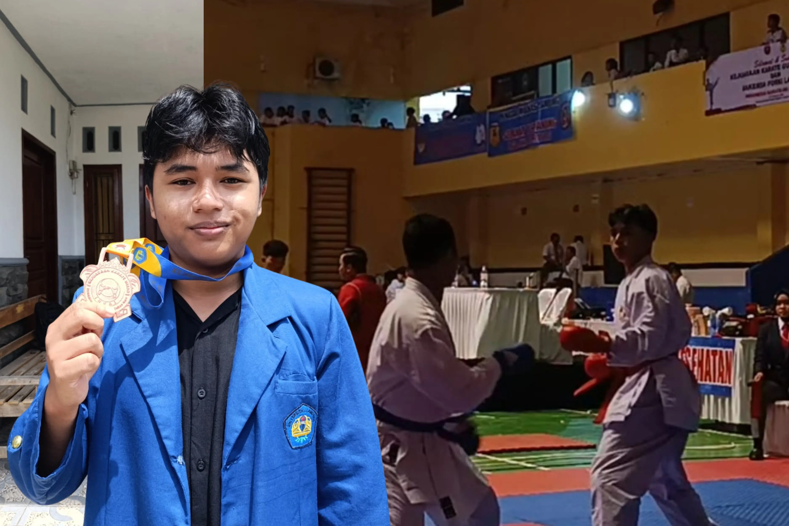
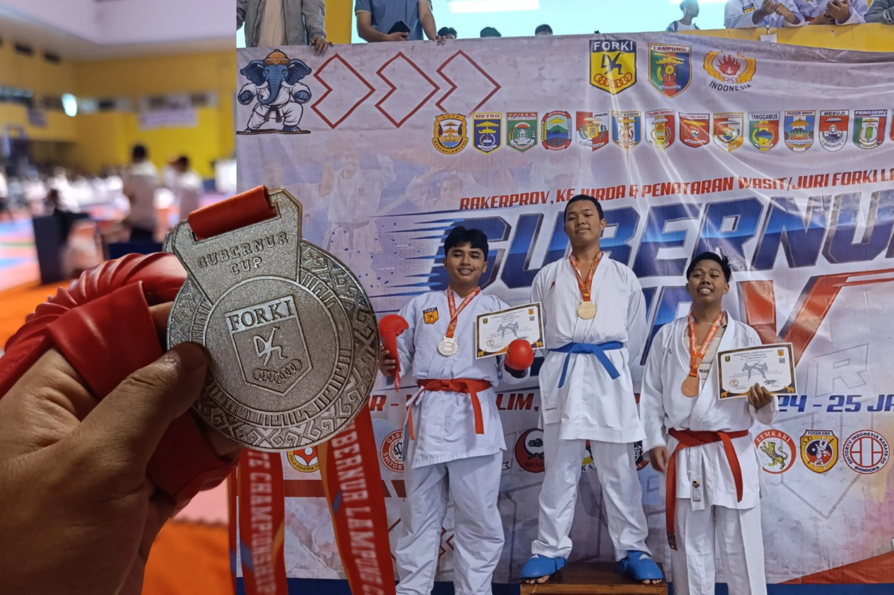

Hi, I'm Lakaisha
Computer Science Student. Passionate about Web Development, Data Science, and creating logical solutions.
"in another life aku gamau masuk ilmu komputer"
Computer Science Student. Passionate about Web Development, Data Science, and creating logical solutions.
Sekilas tempat aku pernah kerja, apa yang udah dibangun, sama beberapa pencapaian di kompetisi.

My main job is making Rubik's videos for Balamcubes. I handle everything from writing the scripts to editing the final video. I've made 400+ short videos so far and they've reached millions of views across all platforms.

I've organized 11 online Rubik's competitions through Fanztime. Managed over 500+ participants from all over Indonesia and handled all the match brackets and logistics.

Worked as part of the committee for two Karate tournaments. Mostly helped with organizing participants and making sure the matches ran smoothly.

Achieved 3rd place in the National Level Karate Championship INTAR UNILA.

Secured the Silver Medal (2nd Place) in the Provincial Level Karate Championship.
Won 2nd place in the National Level LKBB organized by Pramuka UNILA during high school.